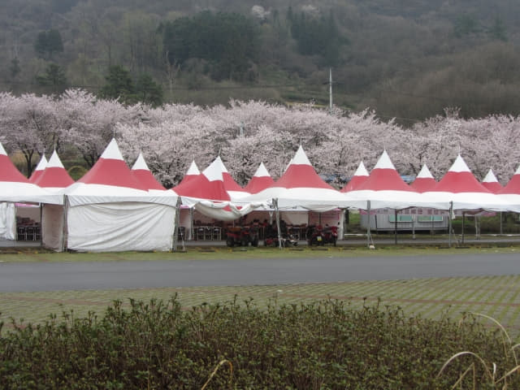
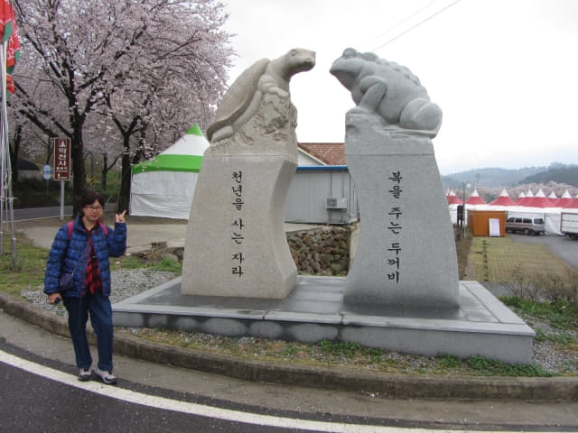
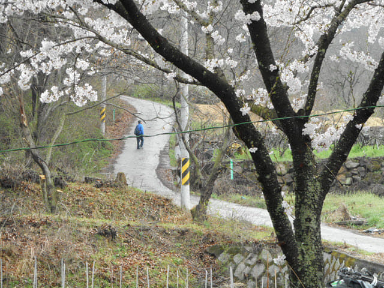
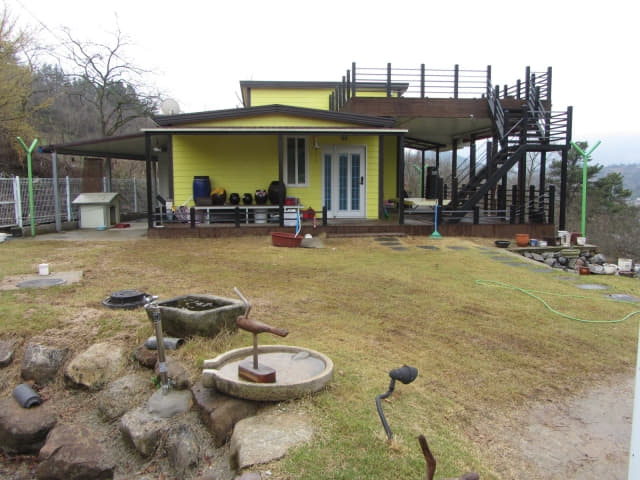
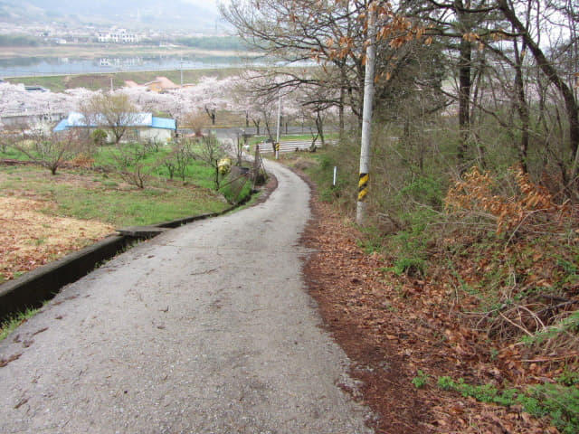

在蟾津江畔的帳篷攤檔吃完極簡單、份量很少的湯麵午餐, 雖然不飽, 但總算吃了午餐, 應該可以支撐到傍晚吧。現在要立即決定下午的行程了。按原定計劃, 接著是步行往求禮公用公交客運站, 搭乘下午 14:30 的巴士往雙磎寺, 然後沿花開櫻花路步行往花開市場。
看看手錶, 約下午一時, 看看地圖, 我們現在是在四聖庵 (사성암 Saseongam) 山下入口, 如果走快一些, 估計步行一小時多便可抵達求禮公用公交客運站, 應該可以趕及乘下午 14:30 的巴士往雙磎寺。但想起當走完整條九公里多的寧靜絕美蟾津江櫻花路後, 肯定感到萬萬分滿足, 再想起只有六公里的花開櫻花路, 和人山人海的場面, 比較之下, 已經再提不起興趣前往, 況且腦子已經再沒有空間容納更多的櫻花影像, 便決定放棄下午往花開市場這行程。
放棄了下午往花開櫻花路這行程, 最大好處是可以繼續慢慢的欣賞下半段的蟾津江櫻花路, 而且, 還可以將騰出來的時間往鳥山 (오산) 山上的四聖庵遊覽。很多朋友喜歡每天都追趕密密麻麻的行程, 我們剛好相返! 畢竟旅遊和工作不同, 應該悠閒一些, 盡量鬆弛身心
最後很快決定了下午的行程: 先登上鳥山山上的四聖庵, 然後繼續沿蟾津江櫻花路走往求禮公用公交客運站。
取消了花開櫻花路這行程, 時間頓時寬裕起來, 心情更加輕鬆, 便先在蟾津江畔四處逛逛。
蟾津江畔的散步地圖。
從蟾津江畔看剛才在那裡午餐的帳篷攤檔。

蟾津江畔優美景色。
蟾津江畔好醒目的紅色電話亭。
呵呵呵~~~ 這裡仍然可以看到橫躺蟾津江兩岸的白橋。
帳篷攤檔廣場入口處的一對得意石雕。

登上鳥山 (오산)上的四聖庵 (사성암)
在蟾津江畔及附近流連了一會, 是時候開始登上鳥山上的四聖庵了。看看地圖, 有兩條路線可以登上四聖庵, 第一: 先沿汽車路走到鳥山的山腰, 再沿登山小徑到達四聖庵; 第二: 沿鳥山山下登山小徑入口一直走到四聖庵。從地圖上來看, 第一條路線明顯遠很多, 也不見得好走很多, 所以最後決定選擇了第二條路線登上四聖庵。

她怕辛苦, 寧可留在蟾津江畔等我回來, 她這決定絕對、絕對是正確的!
接著我立即出發, 穿過帳篷攤檔, 馬路對面便是第一條路線的四聖庵山下馬路入口。
繼續向前走一會, 便來到第二條路線的四聖庵山下登山小徑入口。
走過馬路, 進入登山小徑。

沿陡斜小徑一直往上走。小徑一開始已經非常陡斜, 起碼有四十五度。

回頭望望山下的蟾津江和帳篷攤檔。哈哈~~ 隱約看見她站在得意石雕旁。
繼續往上走, 已經非常陡斜的小徑越來越陡斜, 簡直步步為艱, 開始後悔選擇了這路線。如果她和我一起來, 在這裡肯定已經放棄了!
經過山上的一間歐陸式優雅小屋。

非常友善的汪汪, 想嘗試鑽出來和我玩, 可惜身型肥大了一些。
這一段根本不是走上去, 應該用蹲伏而上比較貼切。如果有機會往四聖庵的朋友, 千萬不要選擇這路線, 保證你一定後悔! 至於另一條路線的情況, 我不清楚, 只知道千萬不要選擇這登山路線!
好不容易, 膝蓋也似乎移了位才來到山腰, 唯一回報是腳下無限風光。
右邊藍色的橋樑應該是文尺橋 (문척교)了, 稍後我們便會沿這橋樑走到蟾津江對岸的求禮巴士客運站。
在鳥山的山腰稍作休息, 讓膝蓋回復正常位置, 便繼續行程。什麼? 有兩條路的? 為什麼地圖上沒有分叉路口的? 看清楚路標, 為什麼沒有往四聖庵 (사성암) 的? 開始懷疑這登山路是否可以往四聖庵?
沿左邊的小路走了一會, 發覺不對勁, 便掉頭循另一條小徑走。
沿陰森小徑一直走, 半個人影也沒有, 有點恐怖。
沒有標示 登上四聖庵失敗
越走越高, 沿途沒有標示, 又沒有登山客可以問路。越走越不對勁, 恐怕白走一趟, 便決定到此為止, 掉頭循原路離開。
唉! 又要走這後超陡斜, 不是給人走的路! 下坡比上坡更困難, 因坡道太傾斜, 除了感到膝蓋被強力擠壓外, 為了身體不滑下, 每走一步, 鞋底都需要緊緊的粘貼地面, 鞋身和鞋底之間形成一道強力的 Shearing Force, 感覺鞋底好像隨時會被「卒甩」的, 走這段超陡斜道路的代價可真大! 再次奉勸各位: 千萬不要選擇這路線, 保證你一定後悔!

返回帳篷攤檔廣場入口處的一對得意石雕, 結束了登上四聖庵這失敗行程, 換來酸痛小腿和膝蓋。